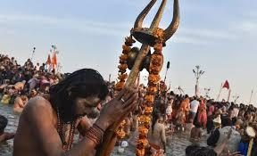

Religion and SocietyHigh priority
Compare theorists in a table, then bring Indian examples: Bhakti sects, Kumbh Mela, communalism and the multicultural state.
Chapter map#
- Religion and society
Origins
- Naturism
- Animism
- Totemism
Marx and feminists
- Opiate
- Patriarchy
Weber
- Calvinism
- Calling
- Asceticism
- Critics
Secularisation
- Science
- Attendance
- Differentiation
- Surveys
Revival
- Materialism
- Politics
- Technology
Fundamentalism
- Madan
- Shupe
- Giddens
- Bruce
Sects and cults
- Church
- Denomination
- Sect
- Cult
Exam lens#
The story first#
In simple words#
- Origins: Müller = nature; Tylor = spirits; Durkheim = totem as society.
- Marx: religion is an opiate serving the ruling class; Weber: Protestant ethic helped capitalism; Durkheim: religion binds society.
- Secularisation = declining social significance of religion, but it is uneven and reversible.
- Church > denomination > sect > cult (new religious movement) differ by size, hierarchy and parent religion.
| Term | In plain words |
|---|---|
| Naturism | Müller: religion began as nature worship. |
| Animism | Tylor: religion began as spirit worship. |
| Totemism | Durkheim: clan's sacred animal or plant symbol that represents the clan. |
| Spirit of capitalism | Weber: ethic of disciplined, rational, continuous profit-making. |
| Predestination | Calvinist belief that salvation is fixed by God. |
| Secularization | Process in which religious thinking, practice and institutions lose social significance (Wilson). |
| Invisible religion | Luckmann: religion shifted from public ritual to private belief. |
| Religious revivalism | Renewed assertion of religious beliefs and practices. |
| Fundamentalism | Militant, literal reading of sacred texts and a return to an imagined pure past. |
| New religious movements | Neutral term preferred over 'cult'. |
1 · Overview#
- Religion is one of the most ancient and universal social institutions, playing a central role in shaping beliefs, values, norms, and collective identities.
- In every society, religion provides meaning to human existence, offers explanations for suffering and uncertainty, and establishes moral guidelines for conduct.
- Sociologist Roland Robertson defined religion as a belief in “the existence of supernatural beings which have a governing effect on life.” This definition emphasizes that religion is concerned with realities that go beyond the observable world and provides meaning by linking everyday life with a higher power.
- Sociologists study religion not merely as a matter of personal faith, but as a social institution that influences social relationships, power structures, cultural practices, and social change.
2 · Theories of Religion#


- 1. Naturism The theory of naturism contends that religion emerged in the form of nature worship.Max Muller believed that the primitive man, being greatly exposed to and vulnerable before the forces of nature, experienced constant fear, wonder, and awe.
- To cope with the emotional turmoil caused by nature, he began to personify its elements and propitiate them.
- This led to the development of religion, and its process helped him to fulfil his emotional needs and manage his anxiety.
- Primitive man began worshipping trees and nature 2.
- Animism According to E. B. Tylor, the primitive man was troubled by two fundamental questions: what causes the difference between the living and the dead, and what explains the images seen in dreams and visions.
- To address these mysteries, he developed the concept of anima or spirit, giving rise to the earliest forms of religious belief.
- Thus, religion began as spirit worship, as a means to satisfy the intellectual needs of man.
- Primitive tribes worhipped spirits 3. Functionalism Durkheim, inThe Elementary Forms of the Religious Life, views religion as a unifying force that promotes shared morality and reinforces social cohesion.
- It binds individuals into a moral community through collective rituals.
- Durkheim studied totemism among Arunta tribe of Australia and treated it as one of the simplest forms of religion.
- A totem is usually an animal or plant symbol regarded as sacred by a clan.
- Members of the clan believe that they share a special relationship with the totem.
- For Durkheim, the totem is not merely a religious symbol; it represents the clan itself.
- Thus, when people worship the totem, they are indirectly worshipping society.
- Totemism therefore shows that religion is rooted in collective life and helps create social solidarity.
- Malinowski, in his study of the Trobriand Islanders, observed that religious activity accompanied major life crises such as birth, marriage, and death.
- During these significant transitions, religion provided emotional support, helping individuals overcome anxiety and fear.
- Religion also accompanied deep-sea fishing, giving the islanders a sense of certainty in the face of risk and uncertainty.
- However, the functional theory is criticized for downplaying conflict, violence, and divisiveness in the name of religion.
- It tends to overlook the oppressive role religion has played in reinforcing patriarchy, caste-based discrimination, and other forms of social inequality.
| Basis | Naturism | Animism | Totemism |
|---|---|---|---|
| Main Thinker | Max Müller | E. B. Tylor | Emile Durkheim |
| Core Idea | Religion began as nature worship. | Religion began as spirit worship. | Religion involves worship of sacred clan symbols. |
| Source of Religious Belief | Fear, wonder and awe before natural forces like sun, rain, fire, thunder and rivers. | Reflection on dreams, death, soul, ghosts and spirits. | Collective attachment to a totem (usually an animal or plant symbol). |
| Communities that practice | Vedic Aryans | Algonquian and Ojibwa (USA), Zulu (S. Africa) | Arunta tribe (Australia) |
| Human Need Served | Emotional need to cope with nature’s power and uncertainty. | Intellectual need to explain life, death and dreams. | Social need for group unity, identity and solidarity. |
| Religion arises from | |||
| Nature of Explanation | Religion arises from personification of nature. | Religion arises from belief in anima or spirit. | society worshipping itself through sacred symbols. |
- 4. Marxism Karl Marx famously stated that "religion is the opiate of the people." From a Marxist perspective, religion is part of the superstructure that functions to serve the interests of the ruling class.
- It helps to legitimize and justify economic inequality, maintain the status quo, and perpetuate dominance of the bourgeoisie over the proletariat.
- Religion performs this ideological function in several ways: a) It makes suffering virtuous Religion often glorifies suffering as a moral good, encouraging the poor to see their hardships as noble or divinely willed.
- For example, many religious texts promote the idea that humility and poverty are closer to godliness.
- This discourages people from resisting or questioning their economic deprivation. b) It explains social order as divinely ordained Religious doctrines frequently present existing hierarchies and class positions as natural or ordained by God.
- This discourages people from challenging injustice, as doing so could be seen as opposing divine will. c) It gives hope of divine intervention Religion promises that a higher power will eventually intervene and deliver justice - either in this life or the next.
- This creates a sense of passivity, submission, and resignation among the oppressed classes, who wait for divine help rather than organizing to change their material conditions. d) It promotes the notion of a beautiful afterlife Many religions teach that the faithful will be rewarded in the afterlife for their suffering in this life.
- This belief encourages the poor to accept their current oppression in the hope of eternal bliss, thus distracting them from seeking justice or economic equality in the present world.
- Thus, from the Marxist perspective, religion functions ideologically to support the capitalist system by normalizing inequality, pacifying the oppressed, and discouraging revolution.
- 5.Feminist Theory of Religion Feminist scholars have highlighted the patriarchal bias and control in most religions.
- Nearly all major world religions are patriarchal.Karen Armstrong argues that religions are overwhelmingly male-dominated: Founders of most religions are men.
- Gods are often male; priesthood and top religious leadership are male.
- Menstruation is considered taboo, and women are excluded from key rituals.Simone de Beauvoir, in her book The Second Sex, suggests religion acts as "opium for women" glorifying motherhood and defining women in roles like the obedient wife.
- 6.Weber's Theory of Religion Max Weber sought to understand why modern capitalism developed first in the West, particularly in Protestant regions of Europe, and not in other advanced civilizations like China or India.
- Protestants worked hard and were devoted to worldly success Weber argued that certain religious ideas within Protestantism, especially Calvinism, played a crucial role in fostering the spirit of capitalism.
- Spirit of Capitalism Weber defines the ‘spirit of capitalism’ as a set of values and attitudes that emphasize hard work, discipline, and rational economic activity aimed at continuous profit-making.
- Unlike earlier economic systems that were more about subsistence or the pursuit of wealth for personal enjoyment, the capitalist spirit is characterized by the pursuit of profit as an ethical duty and through rational organization of work.
- Weber argued that the ethos of capitalism entails a disciplined, calculated approach to work and economic activity - one that is efficient, systematic, and rational.
- Weber identified specific characteristics of this capitalist spirit:
- ● Systematic pursuit of profit: The desire to continuously accumulate wealth is seen as a moral duty rather than an individual desire for luxury or indulgence.
- ● Hard work and frugality: A focus on diligence and saving, with profit being reinvested in further economic ventures rather than personal consumption.
- ● Rational organization: Businesses operate in a methodical and rational manner, prioritizing efficiency and planning.
- Weber approvingly quotes from Benjamin Franklin’s ‘Necessary Hints To Those That Would Be Rich’ and considers it as the personification of the spirit of capitalism - prudence, hard work, industry, and honesty, are the traits necessary of a businessman.
- John Calvin (1509-1564) led the Protestant Reformation in Europe Key points of Weber’s theory: 1.
- Finite Mind of Man Cannot Comprehend the Infinite Mind of God Calvinist theology emphasized the absolute transcendence and incomprehensibility of God’s will.
- Human beings, with their limited understanding, could not question or influence divine plans.
- This encouraged a this-worldly orientation amongst its followers.
- 2. 24x7 Work Ethic: Protestantism, especially in Puritan form, promoted the idea that "work is worship".
- It distanced itself from the Catholic tradition of numerous religious holidays.
- The sanctification of constant labor led to a relentless work culture, where time was to be used productively at all times.
- This work ethic deeply shaped the values of early capitalism, fostering continuous industriousness and discipline.
- 3. Reinterpreting the Prohibition on Usury: While the Bible traditionally condemned usury (charging interest on loans), Protestant thinkers reinterpreted this prohibition.
- They distinguished between exploitative lending and legitimate interest in business, thus morally legitimizing capitalist banking and finance, which had been stigmatized in earlier Christian doctrine.
- This reinterpretation paved the way for modern capitalist financial systems to flourish.
- 4. Doctrine of Predestination: Calvinists believed that only a few were predestined by God for salvation, and this could not be changed.
- This created salvation anxiety among believers, who then looked for Signs of being chosen .
- Worldly success was considered as a Sign of salvation .
- Prosperity through hard work came to be seen as an indication of divine favour.
- Thus, Calvinists began to devote themselves to their occupations with intense seriousness to demonstrate moral worth.
- 5. Notion of Calling: Weber highlighted how Protestantism, especially Calvinism, introduced the idea that every individual has a "calling" - a God-given duty to perform their secular work with dedication and discipline.
- Unlike earlier views that saw religious devotion as separate from worldly labor, Protestants treated work itself as a form of worship. This sanctified daily labor, encouraging industriousness and skill specialization - which laid the cultural foundation for modern capitalism.
- 6. Asceticism and Reinvestment: Protestant ethics promoted asceticism - a lifestyle of discipline and self-denial.
- Rather than spending on luxuries, profits were reinvested in business.
- This led to capital accumulation, a key driver of capitalism.
- Protestant beliefs encouraged one to remain dedicated to their work, be industrious, and undertake work as a religious duty.
- Thus, the Protestant ethic inculcated the spirit of capitalism in its followers.
- Weber emphasized that religion can be a major driver of socio- economic change, countering Marx’s idea that religion is a status quoist force.
- However, once capitalism took root, its momentum became self-sustaining and independent of religious values .
- In sum, Weber showed how religious ideas shaped economic behaviour, illustrating the complex relationship between culture and economy .
- Criticisms of Weber's Theory of Religion 1.
- Weber Misunderstood Other Religions Critics argue that Weber had a limited or orientalist view of non-Western religions like Hinduism and Confucianism, reducing them unfairly to passive and otherworldly traditions.
- 2. Capitalism Originated amongst Jews Some scholars argue that Jewish communities, especially in medieval Europe, played a critical role in developing capitalist practices like moneylending, trade, and finance.
- 3. Calvinism Opposed Greed Sombart contended that Calvinism discouraged greed and profit-making for its own sake, contradicting Weber’s linkage between Calvinist values and capitalist accumulation.
- 4. Capitalism Preceded Protestantism Kautsky believed Weber got the causality backwards - that it was not Protestantism that caused capitalism, but rather capitalism that influenced religious thought and values.
- Commercial capitalism began before the Protestant Reformation.
- Protestantism may have legitimized capitalism later but was not its origin.
- 5. Capitalism Began in Catholic Italy Schumpeter argued that capitalism first took root in 14th-century Italian city-states like Florence and Venice - regions steeped in Catholicism, not Protestantism.
- While Weber’s theory has also been subject to several criticisms, it remains a foundational text in the sociology of religion.
- Weber’s key contribution to the sociology of religion was his rejection of economic determinism, the idea that material conditions (as proposed by Karl Marx) shape society.
- Weber's work on religion is in fact an important critique of Marx's historical materialism.
- Marx argued that the economic base determines the superstructure, including religion, and viewed religion largely as a reflection of material conditions.
- Weber challenged this one-way causal relationship by demonstrating that ideas, beliefs, and values can themselves become independent forces of social change.
- He showed that the ascetic values of Protestantism fostered discipline, hard work, and thrift, thereby contributing to the rise of modern capitalism.
- Weber, unlike Marx, showed that religion helped the emergence of capitalism, advocating a multicausal rather than economically deterministic understanding of social change.
- Comparison of Marx, Weber, and Durkheim’s Theories of Religion
| Basis | Karl Marx | Max Weber | Emile Durkheim |
|---|---|---|---|
| Approach | Conflict approach | Interpretive approach | Functionalist approach |
| Social Role of Religion | Legitimizes domination, exploitation and inequality | Provides ethical orientation and meaning for social action | Promotes social integration and collective solidarity |
| Major Works | The German Ideology; Das Kapital | The Protestant Ethic and the Spirit of Capitalism; The Sociology of Religion | The Elementary Forms of Religious Life |
| Object of Study | Religion in general | Major world religions (Protestantism, Hinduism, Judaism, Confucianism) | Totemism of Arunta tribe |
| Method of | Critical and theoretical | Comparative analysis focusing on meanings | Ethnographic study of a tribal |
| Study | analysis | focusing on meanings and motivations | study of a tribal community |
| Religion and Social Change | Religion maintains status quo by legitimizing existing inequalities | Religion can become an agent of social change (e.g., Protestant ethic and capitalism) | Religion maintains social order and stability |
| Key Concepts | "Religion is the opium of the people" | Protestant Ethic, religious ideas as drivers of social change | Sacred and Profane, Collective Conscience, Totemism |
3 · Religion In Modern Society#


- Secularization Secularization means the declining social significance of religion in modern society.
- Once central to all aspects of life, religion now plays a reduced role in shaping social institutions and everyday decisions.Bryan Wilson inReligion in Secular Societydefined secularization as “the process whereby religious thinking, practices and institutions lose social significance”.
- Religion, he contends, has lost influence at the societal, the institutional and the individual level.
- Empty churches in Europe signify Secularization Causative Factors and Evidence 1.
- Challenge from Science With the growing domain of scientific knowledge, people have increasingly turned to scientific rather than theological explanations for natural and social phenomena.
- Science is seen to offer more accurate explanations and solutions to human problems.
- Comte, in his Law of Three Stages, argued that societies evolve from the theological stage to ultimately the positive/ scientific stage.
- Weber noted that modernization brings with it rationalization and disenchantment.
- As rational thinking takes over, role of mystery and religious awe diminishes.
- Decisions in modern life are largely made through logic, evidence, and calculated reasoning.
- 2. Decline in Church Attendance A marked fall in regular church attendance, particularly in Western Europe, serves as direct empirical evidence of secularization.
- This indicates a reduced role of religion in everyday lives of people.
- 3. Disengagement of Church In pre-modern societies, religious institutions played a key role in governance, education, and economic regulation.
- However, with modernization, a process ofstructural differentiationhas occurred - where specialized institutions have emerged for different societal functions (Steve Bruce).
- As a result, religion has withdrawn from these spheres and lost its former centrality.
- 4. Surveys as Evidence Numerous surveys have documented a noticeable decline in religious affiliation and belief worldwide.
- According to the Pew Research Center (2010), around 1.1 billion people globally were atheist, agnostic, or unaffiliated with any religion.
- In the United States, a Gallup poll found that 21% of Americans identified with no religion in 2022 - a steep rise from just 1% in 1951.
- The Eurobarometer survey (2010) reported that 40% of people in France, 34% in Sweden, 30% in the Netherlands, and 27% in Germany did not hold any religious beliefs.
- Similarly, a 2012 WIN-Gallup poll estimated that 47% Chinese are atheist.
- 5. Declining Role of Religion During Life-Crisis Events In earlier societies, religion played a pivotal role in life-crisis events such as birth, puberty, marriage, and death.
- Today, these have become increasingly secularized-marriages are often civil, birthdays are celebrated without rituals, and even religious festivals are marked more by social celebration than spirituality.
- This shift reflects a weakening role of religious institutions and authorities in shaping key moments of personal and social life.
- While the above arguments and evidence suggest a significant decline in the authority and public influence of religion in modern societies, this interpretation is not uncontested.
- Several scholars argue that secularization has been overstated, uneven, or wrongly understood, pointing out that religion has not disappeared but has transformed, and reasserted itself in new forms.
- These criticisms question the universality and linearity of the secularization thesis and invite a more nuanced evaluation of its claims.
- Criticisms of Secularization Hypothesis 1.
- Problems of Measurement: Measuring religiosity is complex.
- Religious belief is deeply personal and not easily quantifiable by metrics like church attendance alone.
- 2. Invisible Religion: Thomas Luckmann, in his book Invisible Religion, argues that religion has shifted from public rituals to personal, individualized expressions of faith.
- Instead of public celebrations or institutional worship, modern societies have seen religious practices become more private and individual-centered.
- 3. New Forms of Sacred: Durkheim suggests that while traditional religious symbols may decline, modern society creates new sacred symbols-such as nation worship or the cult of the individual-that fulfill similar integrative functions.
- 4. Growing Religious Fundamentalism: The surge of religious fundamentalism and revivalist movements across the globe counters the secularization thesis, showing religion's continued relevance in contemporary society.
- Modernization has promoted secularization in many ways.
- However, modernization and secularization do not always move together in a uniform manner.
- Modernization promotes science, rationalization, urbanization, education, and institutional differentiation, all of which can weaken traditional religious authority.
- This is visible in many Western European societies where church attendance and religious affiliation have declined.
- On the other hand, the experience of West Asia, India, and several other societies shows that modernization may also coexist with religious revivalism, fundamentalism, and public religiosity.
- The secularization debate suggests that while religion’s public authority and institutional control over social life have weakened in many societies, this does not necessarily imply the disappearance of religion itself.
- Instead, religion has changed its form-becoming privatized, individualized, diversified, or reasserted in new social and political ways.
- Thus, rather than a linear decline, secularization appears to be a context-specific, uneven, and reversible process; shaped by history, culture, and power relations.
- Contemporary societies therefore reflect not a post-religious world, but a reconfigured relationship between religion, state, and society.
4 · Religious Revival in Contemporary Times#


- In contemporary times, contrary to the secularization thesis, we are witnessing a clear resurgence of religion in various forms.
- There is an increase in public piety, visible assertion of religious identity, growing interest in spirituality, large attendance at religious gatherings, and a notable rise in religious tourism and pilgrimage across the globe.
- This phenomenon is referred to as religious revival- a process wherein religion reclaims its place in the lives of individuals and societies in response to the challenges and discontents of modernity.
- Religious gatherings like the Kumbh Mela signify religious revival Understanding Religious Revival 1.
- Invisible Religion: In modern societies, religion often continues to exist in invisible, private forms.Thomas Luckmann, inInvisible Religion, argues that human beings are intrinsically religious, and even if religious practice is no longer publicly visible, individuals continue to rely on religion for personal meaning and comfort.
- 2. Reaction to Materialism: Increasingly materialistic and consumerist lifestyles leave people feeling empty and disenchanted.
- As a response, many seek spiritual solace.
- Societies with high levels of affluence - like the United States - have seen growing interest in mysticism, spirituality, yoga retreats, and Eastern wisdom.
- 3. Political Mobilization: In many parts of the world, the growing popularity of right-wing political parties has contributed to religious revival.
- These movements often glorify the religious identity of the majority community, promote conservative social values, and take strong stances on immigration and cultural nationalism, thereby reinforcing religious sentiment.
- 4. Technology: Modern technology has played a significant role in propagating religion.
- Televangelists use television to reach mass audiences; social media platforms spread religious messages rapidly.
- Additionally, improvements in transportation have made religious pilgrimages cheaper, faster, and more comfortable, thereby increasing participation.
- 5. Economic Prosperity: Religious revival is often facilitated when financial resources are available.
- For example, wealthy diasporas or religious patrons fund temple constructions, religious schools, and mass religious events, enabling religion to flourish.
| Basis | Religious Revivalism | Communalism |
|---|---|---|
| Meaning | Renewal or renewed assertion of religious beliefs and practices | Political use of religion to mobilize one community against another |
| Nature | May be spiritual, cultural, or social | Primarily political |
| Attitude to Others | Not necessarily hostile to other religions | Often involves suspicion or hostility towards other communities |
| Impact | Cultural revival, spiritual renewal, deeper religiosity in a community | Leads to inter-community animosity, conflict, and riots |
| Examples | Rise in pilgrimage, temple visits, spiritual movements, religious festivals | Communal polarization, hate speeches, vote-bank politics |
- Religious revivalism can create serious challenges for the modern nation-state when religious identity enters public and political life in an aggressive form.
- It may strengthen communal polarization, majoritarian politics, minority insecurity, and fuel demands for religion-based laws and policies.
- It may also challenge individual freedoms, gender equality, scientific temper, and constitutional morality.
- In multicultural societies like India, revivalist mobilization can blur the distinction between citizenship and religious identity.
- However, revivalism is not necessarily anti-secular.
- Moderate revival may reflect cultural pride, spiritual renewal, search for identity and meaning, or preservation of heritage.
- The challenge arises when religious revival turns exclusionary, political, and intolerant.
5 · Religious Fundamentalism#
- Religious fundamentalism refers to a militant and assertive form of religiosity that emphasizes a strict, literal interpretation of sacred texts and a desire to return to an imagined pure or original form of religion.
- Fundamentalist movements typically reject religious pluralism, challenge progressive values, and seek to reassert the dominance of their faith in both private and public spheres.
- Across the globe - from Islamic revivalism in the Middle East, Christian fundamentalism in the United States, to ultra-Orthodox Judaism in Israel - such movements reflect a complex interplay of religion, politics, identity, and social change.
- Understanding Religious Fundamentalism 1.
- Reaction against Modernization: Religious fundamentalism often emerges as a counter-response to modernization, which is perceived as eroding traditional values and identities.T.N.
- Madan argues that the loss of religious centrality in modern public life leads some communities to reassert their faith in a purist and rigid manner.
- 2. Response to Globalization: Anson Shupe highlights that globalization, by promoting cultural homogenization and economic integration, marginalizes religious traditions.
- In reaction, communities may turn to fundamentalism to preserve their distinct identity and resist cultural dilution.
- 3. Coping with Risk and Uncertainty: According to Anthony Giddens, the complexity and uncertainty of contemporary life - marked by environmental crises, economic instability, and geopolitical turmoil - drive people to seek stability and certainty.
- Religious fundamentals offer a structured worldview and moral clarity in such turbulent times.
- 4. Additional Factors: Steve Bruce suggests that fundamentalism is not just a response to modernity but also influenced by strategic and contextual factors.
- These include the presence of a common external enemy, and a pool of potential recruits (especially disillusioned youth).
- Furthermore, Bruce argues that religions based on a single sacred text are more prone to fundamentalist tendencies due to their strong ideological coherence.
- Religious fundamentalism is a complex phenomenon rooted in the anxieties of modernity, globalization, and social change.
- While it often emerges as a reactionary force defending perceived traditional values and religious purity, its growth is also shaped by deeper psychological, political, and cultural dynamics.
- Far from being a relic of the past, fundamentalism is a distinctly modern response to uncertainty and identity crises, often thriving in environments where religion provides a sense of order, meaning, and belonging.
- Sects and Cults Troeltsch classified religions into two broad types:church and sect.
- This classification was later expanded by other scholars into a fourfold typology - church, denomination, sect, and cult.
- Achurch is a religion that enjoys a monopoly in a society.
- It has a well-developed hierarchy of officials, draws its membership from all social strata, and has a large follower base.
- When multiple religions coexist in a society, each major religion is considered a denomination.
- Like churches, denominations have a sizable membership from various strata and maintain a structured hierarchy.
- Sects are relatively smaller and newer religious groups that have broken away from a parent religion.
- They often emerge in protest against specific aspects of the parent tradition.
- Typically, sects lack a well-developed hierarchy.
- Their membership base is small and often drawn from the lower social strata.
- Roy Wallis describes sects as deviant religious groups that see themselves as uniquely legitimate.
- They tend to operate in opposition to the wider world and usually demand high levels of commitment from their members.
- Frequently, they are led by charismatic leaders.
- Stark and Bainbridge argue that sects form as offshoots of existing religions.
- They recruit new members primarily through teaching and persuasion, rather than by birth.
- Over time, sects may either transition into denominations or perish.
- Some may become institutionalized. When a sect becomes a denomination or gets institutionalized, it tends to become more mainstream.
- Sects play an important role in multi-religious societies by providing smaller communities of belonging within large religious traditions.
- They often emerge as reformist or protest movements against ritualism, hierarchy, priestly dominance, or moral decline in the parent religion.
- Sects can thus democratize religion by giving voice to marginalized groups and by emphasizing personal devotion, ethical discipline, and equality.
- For example, many Bhakti sects in India challenged caste hierarchy and ritualism, while Protestant sects in Europe challenged the authority of the Catholic Church.
- However, sects may also deepen religious fragmentation if they denounce traditional religions too strongly, and claim monopoly over truth.
- Cults are typically small and newer religious groups that are not direct offshoots of any established or parent religion.
- As Stark and Bainbridge describe them, cults are, in that sense, new religions.
- Unlike sects, which often emerge as a reformist protest within an existing tradition, cults areinnovativeandnovel.
- They develop around new revelations, charismatic leaders, or alternative philosophies.
- Key Characteristics of Cults
- ● No clear parent religion: Cults are not derived from pre-existing religious systems and may introduce entirely new cosmologies, rituals, or doctrines.
- ● Loosely organized: Unlike churches or sects, cults often lack a formal hierarchy or bureaucratic structure.
- ● Low levels of commitment: Membership is generally fluid.
- Adherence to a cult is more voluntary and indicates a transactional relationship.
- ● Charismatic leadership: Many cults are centered around the personality and teachings of a single leader who is perceived as having divine insight.
- ● Experiential focus: Cults often emphasize mystical experience, personal healing, spiritual empowerment, or unconventional knowledge rather than scriptural obedience.
- ● Consumerism: Wallis contends that cults align well with modern consumer culture, offering spiritual services in exchange for participation or donations.
- Due to the negative connotations associated with the term cult - often linked with manipulation and brainwashing - scholars now prefer to use the term New Religious Movements.
- This neutral term allows for objective study without moral judgment.
- Examples of Cults
- ● Scientology (Founded by L. Ron Hubbard): Promotes self-knowledge and spiritual healing through "auditing" and Dianetics.
- It is highly controversial but remains influential and global.
- ● Raelian Movement (Founded by Claude Vorilhon or "Rael"): Believes life on Earth was created by extra-terrestrials.
- It combines science fiction themes with religious rituals.
- ● Heaven’s Gate (Led by Marshall Applewhite and Bonnie Nettles): A millenarian UFO cult that ended tragically in mass suicide in 1997.
- New Religious Movements refer to relatively recent religious or spiritual groups that exist outside established mainstream traditions.
- Scholars prefer to use this term instead of “cult” because it is more neutral and less value-loaded.
- Roy Wallis classified New Religious Movements into three orientations.
- First,world-rejecting movements reject mainstream society and demand total commitment from members, such as some millenarian groups.
- Second,world-accommodating movements do not fully reject society but provide spiritual renewal within existing religious traditions.
- Third,world-affirming movements accept the wider world and offer techniques for personal success, healing, self-development, or prosperity.
- Thus, New Religious Movements reflect the search for meaning, identity, and spiritual experience in modern societies.
- The modern world has seen emergence of a plethora of such movements.
- In fact, the growth of sects and cults or New Religious Movements in contemporary society is linked to the uncertainties of modern life.
- Rapid social change, urban loneliness, individualism, consumerism, weakening of traditional community ties, and dissatisfaction with established religions create a search for alternative sources of meaning.
- Globalization and digital media also allow spiritual ideas to spread rapidly across borders.
- Many such groups offer emotional support, identity, healing, discipline, and personal transformation.
- Some also appeal to modern consumer culture by offering spirituality as a service.
- Thus, the mushrooming of sects and cults reflects both religious experimentation and the anxieties of modern society.
- Religion and Science Religion and science have long been viewed as opposites - even as enemies.
- The rise of modern science played a pivotal role in the secularization of societies, as people began to rely more on empirical, rational, and scientific explanations to understand the natural and social world.
- Consequently, theological or religious interpretations lost centrality, especially in modern Western societies.
- The historical mistrust between the two is evident in incidents like the Galileo affair, where scientific discoveries were met with severe religious backlash.
- The relationship between Religion and Science is very complex However, contemporary scholars like John Polkinghorne have argued that the relationship between religion and science is not necessarily antagonistic.
- In his bookScience and Theology, Polkinghorne outlines four broad models to understand this complex relationship: 1.
- Conflict Model: This model views religion and science as fundamentally incompatible and mutually exclusive.
- Prominent figures like Richard Dawkins and Peter Atkins assert that the two represent opposing worldviews that cannot be reconciled.
- 2. Independence Model: This model sees religion and science as two distinct and independent domains of inquiry.
- According to Stephen Jay Gould, they arenon-overlapping magisteria- religion deals with purpose, meaning, and values, while science concerns itself with facts, empirical evidence, and theories about the physical world.Science and religion deal with fundamentally separate aspects of human experience.
- So, each stays within its own domain, and they co-exist peacefully.
- 3. Dialogue Model: This model suggests that both religion and science are essential for human development and should engage in constructive, mutually respectful dialogue.
- Institutions like the Faraday Institute and journals such asTheology and Sciencefoster such exchanges by encouraging conversation between scientists and religious scholars.
- Religion may shape the values and motivations of scientists; and science may refine religious interpretations.R.K. Merton has pointed out that modern science in its early development was influenced by Christianity.
- 4. Integration Model: According to this model, science and religion are not entirely separate but are part of a unified effort to understand reality.Lawrence Principe supports this view, arguing that the distinction between religion and science is artificial.
- This model stresses that several religions have historically integrated well with scientific ideas. the movement of ideas back and forth between scientific and theological thought has been more usual, and the seeming clashes are fewer and recent.
- Religions have played a key role in development of modern universities and libraries; and scientific research and scholarship was encouraged by religious institutions.
- The relationship between religion and science reflects not just a clash or coexistence of worldviews, but also the broader dynamics of how knowledge is constructed, legitimized, and institutionalized in society.
- As the sociology of knowledge reminds us, what is accepted as "truth" - whether religious or scientific - is shaped by social, cultural, and historical contexts.
- Understanding their interaction, therefore, not only enriches our grasp of both domains but also reveals the deeper processes through which human societies seek meaning and truth.
- Monism and Pluralism Religion, as a system of beliefs, has evolved diverse metaphysical and theological orientations.
- Among the most foundational are monism and pluralism, which offer contrasting ways of conceptualizing divinity , truth , and the path to salvation.
- Monism refers to the belief that ultimate reality is fundamentally one - all apparent diversity is ultimately an expression or illusion of a single, unified divine principle.
- Advaita Vedanta philosophy of Adi Shankaracharya is monist Monism is closely associated with Advaita Vedanta in Hindu philosophy, where Brahman is the sole, eternal reality.
- Monistic systems often emphasize internal spiritual experience over external ritual.
- They promote a more universalistic outlook - seeing all forms of life and faith as expressions of the same divine source.
- Pluralism is a term used in religious philosophy to refer to a worldview of multiplicity, in contrast to monism.
- It is the view that there are many different substances in nature that constitute reality.
- It acknowledges diversity rather than subsuming it into a single metaphysical unity.
- In Indian traditions,Dvaita philosophy represents theological pluralism - recognizing multiple souls and a God as distinct from creation.
- Madhvacharya believed in three entities: God, jiva (soul) and jada (maya, matter).
- Independent Reality is One (Vishnu). The dependent reality comprises all else - the jivas and the jadas.
- Vishnu is independent (svatantra), and Jiva are dependent (paratantra) on him.
- He is almighty, eternal, all-knowing, and compassionate Independent Reality.
- The second reality is dependent (asvatantra-tattva) on Him, but is an equally real universe that exists with its own separate essence.
- Everything that comprises the second reality, such as individual souls and matter have their own separate reality.
- Shintoism (Japan) and Anekantavada (in Jainism) also endorses a pluralist position.
- Thinkers like John Hick advocate that all major religions are culturally conditioned responses to the same ultimate reality - theReal.
- Both monism and pluralism offer important religious visions - one emphasizing oneness and the other diversity.
- These frameworks shape not only belief systems but also social attitudes.
- Religious Pluralism Religious pluralism refers to the coexistence and recognition of multiple religious communities within the same society.
- In India, Hinduism, Islam, Christianity, Sikhism, Buddhism, Jainism, Zoroastrianism, Judaism, and tribal faiths coexist.
- Indian society displays a wide variety of religious practices.
- These include idol worship, prayer, fasting, pilgrimage, festivals, meditation, yoga, ancestor worship, nature worship, spirit worship, bhakti, satsang, temple rituals, mosque prayers, church services, gurudwara congregations, and tribal sacred grove worship. Many practices are community-based and reinforce solidarity, while others are personal and devotional.
- Indian religious life is also marked by syncretic traditions such as Sufi shrines, Bhakti practices, shared festivals, and local cults.
- Thus, religious practice in India is highly diverse, combining textual traditions, folk practices, ritual observances, and everyday spirituality.
- India is home to several religions A multicultural society accommodates cultural and religious diversity through constitutional rights, equal citizenship, minority protections, cultural autonomy, secular governance, democratic representation, and inter-community dialogue.
- In India, provisions such as freedom of religion, cultural and educational rights of minorities, linguistic reorganization of states, and recognition of multiple personal and cultural practices reflect attempts to manage this diversity.
- Many other present-day societies such as the United States, the United Kingdom, and Singapore are also marked by multiple religious traditions living within a common political framework.
- In fact, religious pluralism is the order of modern societies.
- Pluralism is more than mere religious diversity because pluralism implies acceptance, mutual respect, and institutional accommodation of different faiths.
- In multifaith societies, religion performs both integrative and divisive functions.
- It gives individuals identity, moral values, emotional security, and a sense of community.
- Religious institutions also promote charity, welfare, education, and collective support.
- At the same time, when religion becomes politicized or exclusivist, it may generate communalism, intolerance, and conflict.
- Religious pluralism may result in competing personal laws, and tension between religious freedom and constitutional equality Therefore, in plural societies, religion can promote moral integration and cultural diversity, but it also requires constitutional secularism, interfaith dialogue, and state regulation to prevent conflict.
Traps#
| Trap | What goes wrong, and the rule |
|---|---|
| Naturism vs animism | Naturism: nature worship (Müller); animism: spirit worship (Tylor). Exam-hall rule: nature vs spirit. |
| Totemism is not just worship of an animal | For Durkheim the totem represents the clan, so worship is of society. Exam-hall rule: totem = society. |
| Weber vs Marx on religion | Marx: religion reflects the base; Weber: religious ideas can drive economic change. Exam-hall rule: Weber = multicausal. |
| Revivalism vs communalism vs fundamentalism | Revivalism is renewal (may be cultural); communalism is political use of religion; fundamentalism is militant literalism. Exam-hall rule: culture, politics, literalism. |
| Sect vs cult | Sects break from a parent religion; cults are new and not offshoots. Exam-hall rule: parent religion = sect. |
Recall sheet#
Read once, hide it, then rebuild the chapter from memory.
- Robertson's definition? Belief in supernatural beings with a governing effect on life
- Naturism by? Max Müller
- Animism by? E.B. Tylor
- Durkheim's book? The Elementary Forms of the Religious Life
- Tribe Durkheim studied? Arunta of Australia
- Malinowski's study site? Trobriand Islanders
- Marx on religion? Opiate of the people
- Feminist writers named? Karen Armstrong; Simone de Beauvoir (The Second Sex)
- Weber's thesis? Protestant ethic fostered the spirit of capitalism
- Which Franklin text does Weber quote? Necessary Hints to Those That Would Be Rich
- Who said capitalism began in Italy? Schumpeter
- Who said capitalism preceded Protestantism? Kautsky
- Bryan Wilson's book? Religion in Secular Society
- Luckmann's book? Invisible Religion
- Who explains fundamentalism as reaction to modernisation? T.N. Madan
- Giddens on fundamentalism? Response to risk and uncertainty
- Troeltsch's two types? Church and sect
- Preferred neutral term for cult? New religious movements
Abbreviation column#
| Short form | Full form | One-line meaning |
|---|---|---|
| WIN-Gallup | Worldwide Independent Network and Gallup International | 2012 poll on atheism in China |
| PYQ | Previous Years' Questions | Questions UPSC has already asked |
Revise#
| Day | What to do |
|---|---|
| Day 0 | Read the Exam lens and the notes; mark the chapter done |
| Day +1 | Recall sheet: read once, hide, rebuild |
| Day +3 | Flashcards: missed ones only |
| Day +7 | Quick quiz; fix each miss against the Traps |
| Day +21 | Write two Mains answers from memory using the skeletons |
| Day +45 | Blank-page test: redraw the chapter map |
Test yourself#
Quick quiz
Flashcards
Tap the card to flip.
Mains answer skeletons
One for each Mains PYQ quoted in the handout. Tap to open; try the answer first.
2025 · 10 marks · What is the nature of relationship between science and religion in modern society? Analyze with suit…
Question. What is the nature of relationship between science and religion in modern society? Analyze with suitable examples.
- Intro: name Religion and Society and state the central idea in one line (see The story first).
- Body: build the answer from the notes under: Religion In Modern Society.
- Close: finish with the matching criticisms section and a one-line judgement.
2024 · 20 marks · How do you understand the phenomena of the mushrooming of sects and cults in contemporary society? D…
Question. How do you understand the phenomena of the mushrooming of sects and cults in contemporary society? Discuss the factors responsible for the trend.
- Intro: name Religion and Society and state the central idea in one line (see The story first).
- Body: build the answer from the notes under: Religious Fundamentalism.
- Close: finish with the matching criticisms section and a one-line judgement.
2024 · 20 marks · Do modernization and secularization necessarily go together? Give your views
Question. Do modernization and secularization necessarily go together? Give your views
- Intro: name Religion and Society and state the central idea in one line (see The story first).
- Body: build the answer from the notes under: Religion In Modern Society.
- Close: finish with the matching criticisms section and a one-line judgement.
2024 · 10 marks · Discuss the concept of animism and differentiate it from naturism.
Question. Discuss the concept of animism and differentiate it from naturism.
- Intro: name Religion and Society and state the central idea in one line (see The story first).
- Body: build the answer from the notes under: Theories of Religion.
- Close: finish with the matching criticisms section and a one-line judgement.
2024 · 20 marks · How does a multicultural society accommodate diversities of all kinds- ethnic, linguistic and religi…
Question. How does a multicultural society accommodate diversities of all kinds- ethnic, linguistic and religious? Discuss its major challenges.
- Intro: name Religion and Society and state the central idea in one line (see The story first).
- Body: build the answer from the notes under: Religion In Modern Society; Religious Fundamentalism.
- Close: finish with the matching criticisms section and a one-line judgement.
2023 · 20 marks · What are new religious movements? Elaborate emphasizing their forms and orientations.
Question. What are new religious movements? Elaborate emphasizing their forms and orientations.
- Intro: name Religion and Society and state the central idea in one line (see The story first).
- Body: build the answer from the notes under: Religious Fundamentalism.
- Close: finish with the matching criticisms section and a one-line judgement.
2023 · 10 marks · What functions does religion perform in a pluralistic society?
Question. What functions does religion perform in a pluralistic society?
- Intro: name Religion and Society and state the central idea in one line (see The story first).
- Body: build the answer from the notes under: Religion In Modern Society.
- Close: finish with the matching criticisms section and a one-line judgement.
2023 · 10 marks · Highlight the differences and similarities between totemism and animism.
Question. Highlight the differences and similarities between totemism and animism.
- Intro: name Religion and Society and state the central idea in one line (see The story first).
- Body: build the answer from the notes under: Theories of Religion.
- Close: finish with the matching criticisms section and a one-line judgement.
2022 · 10 marks · Write a note on global trends of secularization.
Question. Write a note on global trends of secularization.
- Intro: name Religion and Society and state the central idea in one line (see The story first).
- Body: build the answer from the notes under: Religion In Modern Society.
- Close: finish with the matching criticisms section and a one-line judgement.
2021 · 10 marks · Give your comments on the growth of religious revivalism in the present-day context.
Question. Give your comments on the growth of religious revivalism in the present-day context.
- Intro: name Religion and Society and state the central idea in one line (see The story first).
- Body: build the answer from the notes under: Religious Revival in Contemporary Times.
- Close: finish with the matching criticisms section and a one-line judgement.
2021 · 10 marks · What is cult? Explain the growth of cults in the contemporary world.
Question. What is cult? Explain the growth of cults in the contemporary world.
- Intro: name Religion and Society and state the central idea in one line (see The story first).
- Body: build the answer from the notes under: Religious Fundamentalism.
- Close: finish with the matching criticisms section and a one-line judgement.
2021 · 10 marks · Critically compare the views of E.B. Tylor and Max Muller on Religion.
Question. Critically compare the views of E.B. Tylor and Max Muller on Religion.
- Intro: name Religion and Society and state the central idea in one line (see The story first).
- Body: build the answer from the notes under: Theories of Religion.
- Close: finish with the matching criticisms section and a one-line judgement.
2020 · 10 marks · State the reasons for the various religious beliefs and practices in pre-modern societies.
Question. State the reasons for the various religious beliefs and practices in pre-modern societies.
- Intro: name Religion and Society and state the central idea in one line (see The story first).
- Body: build the answer from the notes under: Theories of Religion.
- Close: finish with the matching criticisms section and a one-line judgement.
2019 · 20 marks · How do Marx, Weber and Durkheim differ in understanding religion? Explain (2025, 20 Marks) 2. Descri…
Question. How do Marx, Weber and Durkheim differ in understanding religion? Explain (2025, 20 Marks) 2. Describe the main idea of Max Weber’s book, ‘The Protestant Ethic and the Spirit of Capitalism’ as a critique of Marxism. (2024, 20 marks) 3. Are all world religious patriarchal? Substantiate your answer with examples.
- Intro: name Religion and Society and state the central idea in one line (see The story first).
- Body: build the answer from the notes under: Theories of Religion.
- Close: finish with the matching criticisms section and a one-line judgement.
2018 · 20 marks · What are sects? Discuss the role in multi-religious societies with empirical examples.
Question. What are sects? Discuss the role in multi-religious societies with empirical examples.
- Intro: name Religion and Society and state the central idea in one line (see The story first).
- Body: build the answer from the notes under: Religious Fundamentalism.
- Close: finish with the matching criticisms section and a one-line judgement.
2018 · 20 marks · Discuss the challenges thrown by religious revivalism to a secular nation-state.
Question. Discuss the challenges thrown by religious revivalism to a secular nation-state.
- Intro: name Religion and Society and state the central idea in one line (see The story first).
- Body: build the answer from the notes under: Religious Revival in Contemporary Times.
- Close: finish with the matching criticisms section and a one-line judgement.
2017 · 10 marks · Elaborate on various types of religious practices prevalent in Indian society.
Question. Elaborate on various types of religious practices prevalent in Indian society.
- Intro: name Religion and Society and state the central idea in one line (see The story first).
- Body: build the answer from the notes under: Overview.
- Close: finish with the matching criticisms section and a one-line judgement.
2016 · 20 marks · “Religious Pluralism is the order of present-day societies.” Explain by giving suitable examples.
Question. “Religious Pluralism is the order of present-day societies.” Explain by giving suitable examples.
- Intro: name Religion and Society and state the central idea in one line (see The story first).
- Body: build the answer from the notes under: Religion In Modern Society.
- Close: finish with the matching criticisms section and a one-line judgement.
2016 · 10 marks · Is religion playing an important role in increasing fundamentalism? Give reasons for your answer.
Question. Is religion playing an important role in increasing fundamentalism? Give reasons for your answer.
- Intro: name Religion and Society and state the central idea in one line (see The story first).
- Body: build the answer from the notes under: Religious Fundamentalism.
- Close: finish with the matching criticisms section and a one-line judgement.
2015 · 20 marks · Define Secularisation. What are its major dimensions in the modern world?
Question. Define Secularisation. What are its major dimensions in the modern world?
- Intro: name Religion and Society and state the central idea in one line (see The story first).
- Body: build the answer from the notes under: Religion In Modern Society.
- Close: finish with the matching criticisms section and a one-line judgement.
2015 · 10 marks · Distinguish between sects and cults with illustrations.
Question. Distinguish between sects and cults with illustrations.
- Intro: name Religion and Society and state the central idea in one line (see The story first).
- Body: build the answer from the notes under: Religious Fundamentalism.
- Close: finish with the matching criticisms section and a one-line judgement.
2014 · 20 marks · How is religious revivalism different from communalism? Elaborate with suitable examples from the In…
Question. How is religious revivalism different from communalism? Elaborate with suitable examples from the Indian context?
- Intro: name Religion and Society and state the central idea in one line (see The story first).
- Body: build the answer from the notes under: Religious Revival in Contemporary Times.
- Close: finish with the matching criticisms section and a one-line judgement.
2013 · 10 marks · “Is Religion antithetical to science? Comment.
Question. “Is Religion antithetical to science? Comment.
- Intro: name Religion and Society and state the central idea in one line (see The story first).
- Body: build the answer from the notes under: Religion In Modern Society.
- Close: finish with the matching criticisms section and a one-line judgement.
2013 · 10 marks · “Science has empirical means to logical end and religion has non- empirical means to logical ends.” …
Question. “Science has empirical means to logical end and religion has non- empirical means to logical ends.” Comment
- Intro: name Religion and Society and state the central idea in one line (see The story first).
- Body: build the answer from the notes under: Religion In Modern Society.
- Close: finish with the matching criticisms section and a one-line judgement.